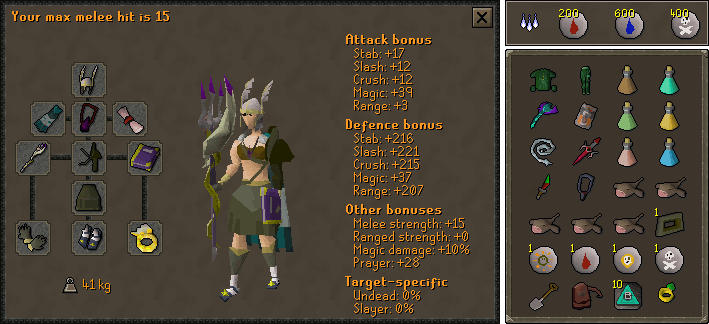
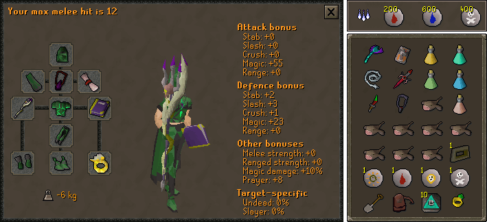

High Level Armour Setup

Trident of the Swamp > Trident of the Seas > Toxic Staff of the Dead > Staff of the Dead > Void Knight Mace > Iban's Staff
Abyssal Whip > Bludgeon > Abyssal dagger > (Toxic) Staff of the dead > Zamorakian Hasta > Saradomin sword > Dragon Scimitar
Blowpipe > Heavy ballista* = Armadyl crossbow > Karil's c'bow > Rune C'bow > Crystal bow > Magic Shortbow
Armadyl godsword > Abyssal dagger > Dragon dagger > Bandos godsword > Saradomin godsword
Arcane Spirit Shield > Book of Darkness > Malediction ward > Broodoo shield
Dragon defender > Rune Defender > Toktz-ket-xil
Elysian = Arcane > Spectral = Blessed spirit shield > Dragonfire shield** > Dragon sq > Rune kiteshield
Neitiznot > Verac's > Farseer > Proselyte
Verac's Brassard > Proselyte > Monk Robes
Armadyl† > Blessed > Karil's‡
Verac's Skirt > Proselyte > Monk Robes
Armadyl† > Blessed > Karil's‡
Eternal = Primordial = Holy Sandals > Infinity > Dragon > Wizard > Mystic
Barrows > Dragon > Rune > Adamant > Regen bracelet > Combat bracelet
Tormented bracelet
Ardougne 3+ > Fire > Ranged Skillcape> Other Skilcapes > God cloak > God cape
Torment§ > Fury > Glory > Stole
Occult
Ring of suffering (i) > Ring of the gods (i) > Seers (i) > Explorers > Archers (i) > Berserker (i)
Any blessing
Notes
- Bring a Tormented bracelet switch if you have it.
- Morytania Legs 3 can be used to teleport to Burgh De Rott instead of using Barrows teleports.
- A Kharyl portal can be used instead of Barrows Teleports.
- You can choose to either pray, tank, entangle or barrage at high levels it doesn't make much of a difference.
- Bank after every chest to save time running back through the tunnels.
- Kill Dharok>Karil>Ahrim>Guthan>Verac>Torag because this set up emphasizes crush defense
- *Heavy compared to other ranged weapons.
- **Very heavy compared to other shields
- †only if not meleeing ahrim
- ‡only if meleeing ahrim with a low prayer level
- §Only if not bringing ranged for ahrim.
High Level Graceful Setup

Trident of the Swamp > Trident of the Seas > Toxic Staff of the Dead > Staff of the Dead > Void Knight Mace > Iban's Staff
Abyssal Whip > Bludgeon > Abyssal dagger > (Toxic) Staff of the dead > Zamorakian Hasta > Saradomin sword > Dragon Scimitar
Blowpipe > Heavy ballista* = Armadyl crossbow > Karil's c'bow > Rune C'bow > Crystal bow > Magic Shortbow
Armadyl godsword > Abyssal dagger > Dragon dagger > Bandos godsword > Saradomin godsword
Arcane Spirit Shield > Book of Darkness > Malediction ward > Broodoo shield
Dragon defender > Rune Defender > Toktz-ket-xil
Elysian = Arcane > Spectral = Blessed spirit shield > Dragonfire shield** > Dragon sq > Rune kiteshield
Graceful hood
Graceful top
Graceful legs
Graceful boots
Graceful gloves
Graceful cape
Torment§ > Fury > Glory > Stole
Occult
Ring of suffering (i) > Ring of the gods (i) > Seers (i) > Explorers > Archers (i) > Berserker (i)
Any blessing
Notes
- Same as armour set up without armour to save stamina potions
- pray/entangle/barrage instead of tanking
- Bring a Tormented bracelet switch if you have it.
- Morytania Legs 3 can be used to teleport to Burgh De Rott instead of using Barrows teleports.
- A Kharyl portal can be used instead of Barrows Teleports.
- You can choose to either pray, entangle, or barrage at high levels it doesn't make much of a difference.
- Bank after every chest to save time running back through the tunnels.
- *Heavy compared to other ranged weapons.
- **Very heavy compared to other shields
- †only if not meleeing ahrim
- ‡only if meleeing ahrim with a low prayer level
- §Only if not bringing ranged for ahrim.
Low Level Setup

Iban's staff > Elemental staff*
Karil's c'bow > Crystal > Rune c'bow > Magic shortbow > Yew shortbow
Abyssal whip > Dragon scimitar > Dragon longsword
Dragon dagger > Dragon battleaxe
Book of darkness > Broodoo shield
Dragon defender > Rune defender > Toktz-ket-xil > Adamant defender > Unholy book > Book of war
Blessed spirit shield > Dragon sq > Spirit shield > Rune kiteshield
Neitiznot > Proselyte > Initiate > God trimmed rune
Proselyte > Monk robes
Blessed > Red > Blue > Green d'hide
Rune plate > Proselyte
Proselyte > Monk robes
Blessed > Red > Blue > Green d'hide
Rune plateskirt > Rune platelegs > Proselyte
Holy sandals > Infinity > Wizard > Mystic
Barrows > Dragon > Rune > Adamant > Regen bracelet > Combat bracelet
Ardougne cloak > God cloak > God cape
Fury > Glory > Stole
Explorer's ring > Ring of life
Any blessing
Notes
- A Kharyl portal can be used instead of Barrows Teleports.
- With this set up you'll do 1-2 chests per trip and return with the shades of mort'ton minigame teleport to reduce costs
- Strategy isn't different from the high level tanking set up, but inlcuded due to how popular barrows is for lower to mid level players.
- You can completely leave out melee gear and mage karil if you have lower than 60 attack and strength, and replace those slots with food
- *With Chaos gauntlets for bolt spells.